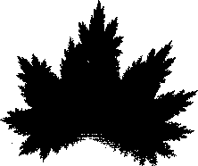

This introduces another gap at the top. One approach to this is to stretch the fourth piece vertically. We do this by changing s4 to 0.4. To assess the success of this IFS, we compare the picture it generates to the outline of the leaf.
|  |
|
Return to Sample.